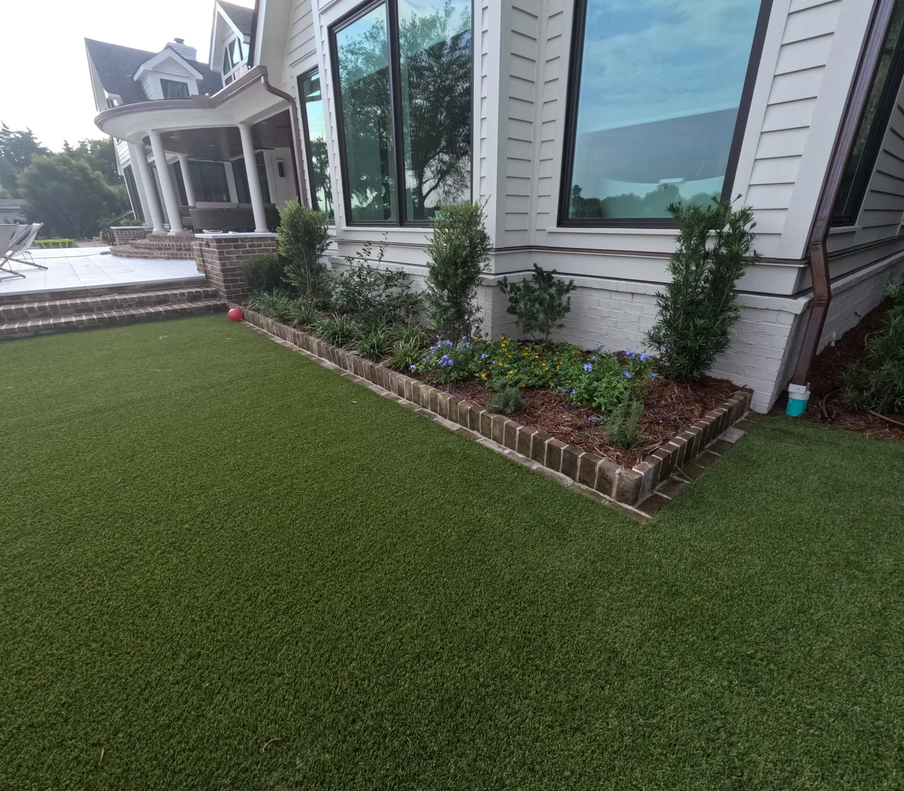
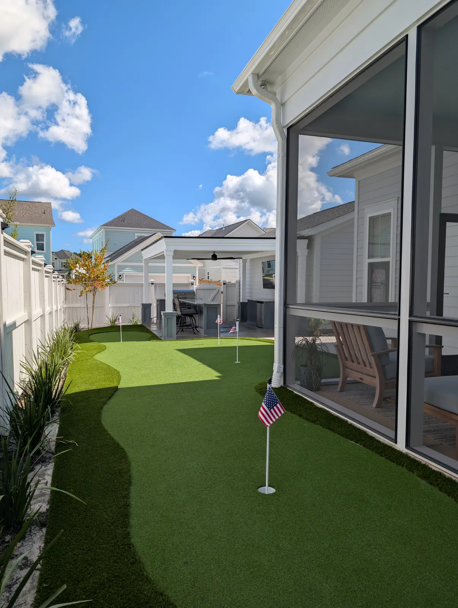
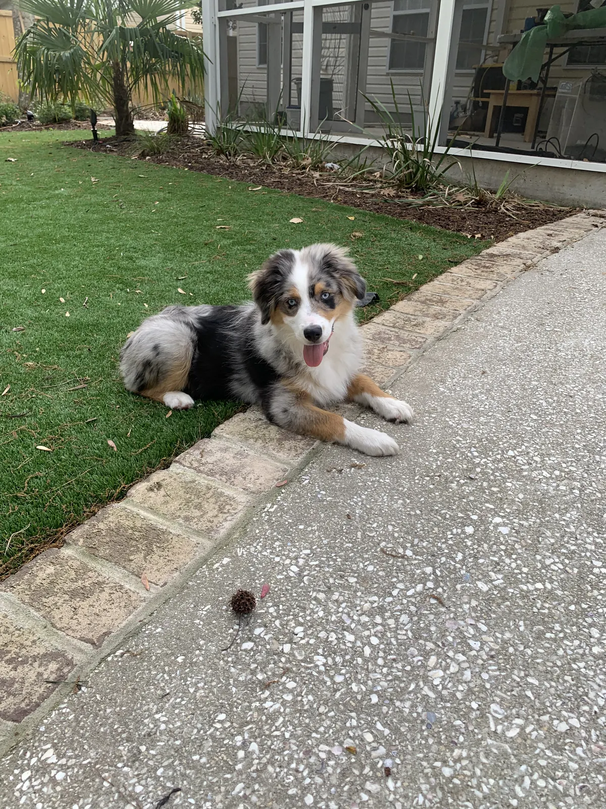

Artificial Turf or Real Grass? We Install Both

We Install Both, So We Have No Side
We install both, so we have no stake in talking you into either. The real question is not which is better — it is whether grass can win where you want to put it.

Where Turf Is the Right Answer
Deep shade under live oaks. The strip the dogs run every day. Tight courtyards with no air movement. Poolside, where a lawn never gets a chance to dry out. Putting greens.
Those are places where grass loses every year, and replacing it every year is a worse deal than turf. From $13 per square foot including base preparation, with size, shape, the specific turf and the amount of prep moving the number.
Where Real Grass Still Wins
Open, sunny yards with decent drainage. Large areas, where turf gets expensive fast. Anywhere you want the yard to feel and smell like a lawn.
Sod is $750 a pallet installed, and a properly graded lawn with irrigation is hard to beat in an open yard.
The Honest Trade-offs
- Turf gets hot. We will not pretend otherwise. On one project we installed a sprinkler system to spray it and cool it off, which works and is worth planning for if it is in full sun and used barefoot.
- Turf is not maintenance free. The real concern is dirt and leaf build-up: wash and power broom it, then top up the sand if needed. Under oaks that is an annual job.
- Grass needs water and mowing, and in Charleston summers it needs both seriously.

What Goes Underneath Turf
Turf is a construction job, not a carpet job. We build the base from crush and run with granite fines on top, compacted and screeded so it lies flat and drains instead of pooling.
Infill is sand, or antimicrobial sand where there are pets. If you have dogs, that is the version to get.
It lasts 15 to 25 years, longer with light use and regular cleaning.

Is Artificial Turf Dog Friendly?
Yes, and it is one of the best uses for it. The strip the dogs run every day is exactly where a lawn wears through to mud, and turf does not. It can also help dogs with grass allergies.
What makes it work for dogs is the build: antimicrobial sand infill rather than plain sand, a high-permeability backing so it drains fast, and a base built to drain rather than pool.
It still gets the same care as any turf: washing and power brooming when it needs it, and a top-up of sand.
What the Research Says
Penn State's Center for Sports Surface Research finds synthetic turf is generally 35 to 55°F hotter than natural grass. Watering helps, but not for long: in their measurements the surface temperature rebounded within about 20 minutes, while staying roughly 10 degrees cooler than unwatered turf for about three hours.1 It is the main trade-off worth knowing before choosing turf for a sunny yard.
At the other end, Clemson Extension says even St. Augustine, the most shade-tolerant warm-season grass, needs 4 to 6 hours of sun,2 and that zoysia and centipede will not survive heavy shade.3 Past that point grass is not a reliable option, which is exactly where turf earns its place.
Sources
Frequently Asked Questions
Is artificial turf better than grass in Charleston?
It depends where. Turf wins in deep shade, dog runs, tight courtyards, poolside and putting greens. Real grass still wins in open sunny yards with decent drainage, and over large areas where turf gets expensive.
How much does artificial turf cost compared to sod?
Turf is from $13 per square foot including base preparation. Sod is $750 a pallet installed, not counting dig-out or regrading.
Does artificial turf get hot in the Charleston sun?
Yes. On one project we installed a sprinkler system to spray and cool it, which is worth planning for if the area is in full sun and gets used barefoot.
How long does artificial turf last?
15 to 25 years, and longer depending on use and maintenance.
Is turf good for dogs?
Yes, and it is one of the best uses for it, including for dogs with grass allergies. Use the antimicrobial sand infill rather than plain sand.
Planning a Project of Your Own?
See everything we design and build, or get in touch to talk through your ideas with Doug and Zach.